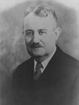

FORMER JUDGES
Judge William H. Bridwell
Judge Bridwell was born in Owensburg Indiana on October 14, 1871. He was a
School teacher for five years before graduating from Indiana University Law School in
1898. He practiced law in Sullivan.
Judge Bridwell served two terms as deputy prosecutor in Sullivan County. Governor
Thomas Marshall appointed him Judge of the Sullivan Circuit Court in 1911; he also
Served in this office for two terms.
Judge Birdwell was elected as a Democrat to the Indiana Appellate Court in 1930 and
served from January 1, 1931 until his death on March 30, 1941. He was Chief Judge four
times – for the November 1931, May 1934, May 1937 and May 1940 terms.
Judge Bridwell was a member of the Sullivan Democrat Committee the Sullivan
Methodist Church, the Indiana Democratic Club, the Odd Fellows, Elks, the Indianapolis
Exchange Club, and the Masons. He was also a member of the American, Indiana State,
and Sullivan County Bar associations.
He died in office on March 30, 1941.
School teacher for five years before graduating from Indiana University Law School in
1898. He practiced law in Sullivan.
Judge Bridwell served two terms as deputy prosecutor in Sullivan County. Governor
Thomas Marshall appointed him Judge of the Sullivan Circuit Court in 1911; he also
Served in this office for two terms.
Judge Birdwell was elected as a Democrat to the Indiana Appellate Court in 1930 and
served from January 1, 1931 until his death on March 30, 1941. He was Chief Judge four
times – for the November 1931, May 1934, May 1937 and May 1940 terms.
Judge Bridwell was a member of the Sullivan Democrat Committee the Sullivan
Methodist Church, the Indiana Democratic Club, the Odd Fellows, Elks, the Indianapolis
Exchange Club, and the Masons. He was also a member of the American, Indiana State,
and Sullivan County Bar associations.
He died in office on March 30, 1941.
